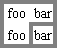

Diagrama mostrando el efecto de los distintos valores de 'vertical-align' sobre las celdas de una tabla.
Contenidos
Las tablas representan relaciones entre datos. Los autores especifican estas relaciones en el lenguaje del documento y especifican su presentación en CSS, de dos maneras: visualmente y auditivamente.
Los autores pueden especificar el formato visual de una tabla como una grilla rectangular de celdas. Las filas y columnas de celdas pueden organizarse en grupos de filas y en grupos de columnas. Las filas, columnas, grupos de filas, grupos de columnas y las celdas pueden tener bordes dibujados alrededor de ellos (hay dos modelos de bordes en CSS2). Los autores pueden alinear los datos verticalmente u horizontalmente dentro de la celda y alinear los datos en todas las celdas de una fila o columna.
Los autores también pueden especificar el procesamiento auditivo de una tabla; cómo serán leídos los títulos y los datos. En el lenguaje del documento, los autores pueden etiquetar las celdas y los grupos de celdas de manera que cuando son procesadas auditivamente, los títulos de las celdas son expresados antes que los datos de la celda. En realidad, esto "serializa" la tabla: los usuarios que recorren la tabla auditivamente escuchan una secuencia de títulos seguidos por los datos.
Aquí hay una tabla simple descripta en HTML 4.0 de tres filas y tres columnas:
<TABLE> <CAPTION>Esta es una tabla simple de 3x3</CAPTION> <TR id="fila1"> <TH>Título 1 <TD>Celda 1 <TD>Celda 2 <TR id="fila2"> <TH>Título 2 <TD>Celda 3 <TD>Celda 4 <TR id="fila3"> <TH>Título 3 <TD>Celda 5 <TD>Celda 6 </TABLE>
Este código crea una tabla (el elemento TABLE), tres filas (los elementos TR), tres celdas de título (los elementos TH) y seis celdas de datos (los elementos TD). Observe que las tres columnas de este ejemplo están especificadas implícitamente: hay tantas columnas en la tabla como se requiere para las celdas de los títulos y los datos.
La siguiente regla CSS centra horizontalmente el texto en las celdas de títulos y presenta los datos con una fuente en negritas:
TH { text-align: center; font-weight: bold }
Las siguientes reglas alínean el texto de las celdas de títulos por su línea de base y centra verticalmente el texto en cada celda de datos:
TH { vertical-align: baseline }
TD { vertical-align: middle }
Las reglas siguientes especifican que la fila superior será rodeada con un borde sólido azul de 3px y cada una de las otras filas serán rodeadas con un borde sólido negro de 1px:
TABLE { border-collapse: collapse }
TR#fila1 { border-top: 3px solid blue }
TR#fila2 { border-top: 1px solid black }
TR#fila3 { border-top: 1px solid black }
Observe, sin embargo, que los bordes alrededor de las filas se superponen cuando las filas se juntan. ¿De qué color (negro o azul) y grosor (1px o 3px) será el borde entre fila1 y fila2? Discutiremos esto en la sección sobre resolución de los conflictos de borde.
La siguiente regla coloca el encabezado de la tabla encima de la tabla:
CAPTION { caption-side: top }
Finalmente, la siguiente regla especifica que, cuando sea procesada auditivamente, cada fila de datos se expresará con un "Título, Datos, Datos":
TH { speak-header: once }
Por ejemplo, la primer fila sería leída como "Titulo1 Celda1 Celda2". Por otra parte, con la siguiente regla:
TH { speak-header: always }
sería expresada como "Título1 Celda1 Título1 Celda2".
El ejemplo precedente muestra cómo CSS trabaja con los elementos de HTML 4.0; en HTML 4.0, la semántica de los distintos elementos de la tabla (TABLE, CAPTION, THEAD, TBODY, TFOOT, COL, COLGROUP, TH y TD) están bien definidos. En otros lenguajes de documento (como las aplicaciones XML) pueden no existir elementos predefinidos para la tabla. Por eso, CSS2 permite a los autores "asignar" a los elementos del lenguaje del documento, elementos de la tabla a través de la propiedad 'display'. Por ejemplo, la siguiente regla hace que el elemento FOO actúe como un elemento HTML TABLE y el elemento BAR actúe como un elemento CAPTION:
FOO { display : table }
BAR { display : table-caption }
Discutiremos los diversos elementos de la tabla en la sección siguiente. En esta especificación, el término elemento de la tabla se refiere a cualquier elemento involucrado en la creación de una tabla. Un elemento "interno" de la tabla es uno que produce una fila, un grupo de filas, una columna, un grupo de columnas o una celda.
El modelo de tabla CSS está basado en el modelo de tabla de HTML 4.0, en el que la estructura de una tabla parangona estrechamente la composición visual de la tabla. En este modelo, una tabla consiste de un encabezamiento opcional y cualquier número de filas y columnas. Se dice que el modelo de tabla es "principalmente de filas" porque los autores especifican filas, no columnas, explícitamente en el lenguaje del documento. Las columnas se derivan una vez que las filas han sido especificadas (la primer celda de cada fila pertenece a la primer columna, la segunda a la segunda columna, etc.). Las filas y columnas pueden se agrupadas estructuralmente y este agrupación se refleja en la presentación (ej., puede dibujarse un borde alrededor de un grupo de filas).
Así, el modelo de tabla consiste en tablas, encabezados, filas, grupos de filas, columnas, grupos de columnas y celdas.
El modelo CSS no requiere que el lenguaje del documento incluya elementos que correspondan a cada uno estos componentes. Para lenguajes de documento (como las aplicaciones XML) que no tienen los elementos de la tabla predefinidos, los autores pueden asignar a los elementos del lenguaje de documento los elementos de la tabla; esto se hace con la propiedad 'display'. Los siguientes valores para 'display' asignan la semántica de la tabla a un elemento arbitrario:
Los elementos con 'display' definido como 'table-column' o 'table-column-group' no son procesados (exactamente como si tuvieran 'display: none'), pero son útiles porque pueden tener atributos que inducen a cierto estilo para las columnas que representan.
La hoja de estilo predeterminada para HTML 4.0 en el apéndice, ilustra el uso de estos valores en HTML 4.0:
TABLE { display: table }
TR { display: table-row }
THEAD { display: table-header-group }
TBODY { display: table-row-group }
TFOOT { display: table-footer-group }
COL { display: table-column }
COLGROUP { display: table-column-group }
TD, TH { display: table-cell }
CAPTION { display: table-caption }
Las aplicaciones del usuario pueden ignorar estos valores para la propiedad 'display' en documentos HTML, ya que los autores no deben alterar el comportamiento esperado de un elemento.
Otros lenguajes de documento fuera de HTML pueden no contener todos los elementos del modelo de tabla CSS2. En este caso, los elementos "faltantes" deben asumirse para que el modelo de tabla funcione. Los elementos faltantes generan objetos anónimos (ej., cajas anónimas en la composición visual de la tabla) de acuerdo con las siguientes reglas:
En este ejemplo XML, un elemento 'table' se asume para contener al elemento HBOX:
<HBOX> <VBOX>George</VBOX> <VBOX>4287</VBOX> <VBOX>1998</VBOX> </HBOX>
porque la hoja de estilo asociada es:
HBOX { display: table-row }
VBOX { display: table-cell }
En este ejemplo, tres elementos 'table-cell' se asumen para contener el texto de cada FILA. Observe que el texto es además encapsulado en cajas de línea anónimas, como se explica en el modelo de formato visual:
<PILA> <FILA>Esta es la fila <D>superior</D>.</FILA> <FILA>Esta es la fila <D>media</D>.</FILA> <FILA>Esta es la fila <D>inferior</D>.</FILA> </PILA>
La hoja de estilo es:
PILA { display: inline-table }
FILA { display: table-row }
D { display: inline; font-weight: bolder }
No se exige a las aplicaciones del usuario HTML que creen objetos anónimos según las reglas anteriores.
Las celdas de la tabla pueden pertenecer a dos contextos: filas y columnas. Sin embargo, en el documento fuente las celdas son descendientes de las filas, nunca de las columnas. No obstante, algunos aspectos de las celdas pueden ser influenciados poniendo propiedades a las columnas.
Las siguientes propiedades se aplican a los elementos columna y grupo de columnas:
Aquí hay algunos ejemplos de reglas de estilo que ponen propiedades a las columnas. Las primeras dos reglas juntas implementan el atributo "rules" de HTML 4.0 con un valor de "cols". La tercer regla hace que la columna "totales" sea azul, las dos reglas finales muestran cómo hacer una columna de tamaño fijo, usando el algoritmo de estructura fija.
COL { border-style: none solid }
TABLE { border-style: hidden }
COL.totales { background: blue }
TABLE { table-layout: fixed }
COL.totales { width: 5em }
En los términos del modelo de formato visual, una tabla debe funcionar como un elemento a nivel de bloque o un elemento a niel de línea reemplazado. Las tablas tienen contenido, relleno, bordes y márgenes.
En ambos casos, el elemento tabla genera una caja anónima que contiene a la propia caja de la tabla y a la caja del encabezado (si está presente). Las cajas de la tabla y el encabezado retienen sus propias áreas de contenido, relleno, márgenes y bordes, y las dimensiones de la caja rectangular anónima son las mínimas requeridas para contener a ambas. Los márgenes verticales se cierran donde la caja de la tabla y la caja del encabezado se tocan. Cualquier reposicionamiento de la tabla debe mover la caja anónima entera, no sólo la caja de la tabla, de modo que el encabezado siga a la tabla.
Diagrama de una tabla con un encabezado encima de ella; el margen inferior del encabezado se cierra con el margen superior de la tabla.
| Valor: | top | bottom | left | right | inherit |
| Inicial: | top |
| Se aplica a: | los elementos 'table-caption' |
| Se hereda: | si |
| Porcentajes: | N/A |
| Medios: | visuales |
Esta propiedad especifica la posición de la caja del encabezado con respecto a la caja de la tabla. Los valores tienen los siguientes significados:
Los encabezados encima o debajo del elemento 'table' son estructurados mucho más como si fueran un elemento de bloque antes o después de la tabla, excepto que (1) heredan las propiedades hereditables de la tabla, y (2) no se consideran como una caja de bloque para el próposito de ningún elemento 'compact' o 'run-in' que pueda preceder a la tabla.
Un encabezado que está arriba o debajo de una caja de tabla también se comporta como una caja de bloque para el cálculo del ancho; el ancho es computado con respecto al ancho del bloque de contención de la caja de la tabla.
Para un encabezado que está a la izquierda o a la derecha de la caja de la tabla, por otro lado, un valor distinto a 'auto' en 'width' pone el ancho explícitamente, pero 'auto' le dice a la aplicación del usuario que elija un "ancho razonable". Este puede variar entre "la caja más angosta posible" y "una sola línea", de modo que recomendamos que los usuarios no especifiquen 'auto' para el ancho de los encabezados sobre la izquierda o derecha.
Para alinear horizontalmente el contenido del encabezado dentro de la caja del encabezado, use la propiedad 'text-align'. Para la alineación vertical de una caja de encabezado sobre la izquierda o derecha con respecto a la caja de la tabla, use la propiedad 'vertical-align'. Los únicos valores significativos en este caso son 'top', 'middle' y 'bottom'. Todos los demás valores son tratados como 'top'.
En este ejemplo, la propiedad 'caption-side' coloca los encabezados debajo de las tablas. El encabezado será tan ancho como el padre de la tabla y el texto del encabezado estará justificado a la izquierda.
CAPTION { caption-side: bottom;
width: auto;
text-align: left }
El siguiente ejemplo muestra como poner un encabezado en el margen izquierdo. La tabla en sí misma está centrada, definiendo sus márgenes izquierdo y derecho como 'auto', y la caja global con la tabla y el encabezado es desplazada dentro del margen izquierdo en la misma medida que el ancho del encabezado.
BODY {
margin-left: 8em
}
TABLE {
margin-left: auto;
margin-right: auto
}
CAPTION {
caption-side: left;
margin-left: -8em;
width: 8em;
text-align: right;
vertical-align: bottom
}
Asumiendo que el ancho de la tabla es menor que el ancho disponible, el formato será similar a esto:
Diagrama mostrando una tabla centrada con el encabezado extendido dentro del margen izquierdo, como resultado de una propiedad 'margin-left' negativa.
Como otros elementos del lenguaje del documento, los elementos internos de la tabla generan cajas rectangulares con contenido, relleno y bordes. No tienen márgenes, sin embargo.
La composición visual de estas cajas está gobernada por una grilla rectangular e irregular de filas y columnas. Cada caja ocupa un número entero de celdas de la grilla, determinado de acuerdo a las siguientes reglas. Estas reglas no se aplican a HTML 4.0 o a versiones más antiguas de HTML; HTML impone sus propias limitaciones al alcance de las filas y columnas.
Nota. Las celdas de la tabla pueden ser posicionadas relativa y absolutamente, pero no se recomienda: el posicionamiento y la flotación quitan a una caja del flujo, afectando la alineación de la tabla.
Aquí hay dos ejemplos. El primero se supone que aparece en un documento HTML:
<TABLE> <TR><TD>1 <TD rowspan="2">2 <TD>3 <TD>4 <TR><TD colspan="2">5 </TABLE>
<TABLE> <ROW><CELL>1 <CELL rowspan="2">2 <CELL>3 <CELL>4 <ROW><CELL colspan="2">5 </TABLE>
La segunda tabla es estructurada como en la figura de la derecha. Sin embargo, el procesamiento de las tablas en HTML está explícitamente indefinido por HTML, y CSS no trata de definirlo. Las aplicaciones del usuario son libres de procesarlas, por ejemplo, como en la figura de la izquierda.
A la izquierda, un posible procesamiento de una equivocada tabla en HTML 4.0; a la derecha, el único formato posible de una tabla no HTML similar.
Con el propósito de encontrar el fondo de cada celda de la tabla, los distintos elementos de la tabla pueden considerarse como si estuvieran en seis capas superpuestas. El fondo aplicado a un elemento de una de estas capas sólo será visible si las capas encima de ella tienen un fondo transparente.
Esquema de las capas de la tabla.
La capa inferior es un simple plano, representando la caja de la tabla en sí. Como todas las cajas, puede ser transparente.
La capa siguiente contiene los grupos de columnas. Los grupos de columnas son tan altos como la tabla, pero no necesariamente cubren horizontalmente toda la tabla.
Sobre los grupos de columnas están las áreas representando las cajas de las columnas. Como los grupos de columnas, las columnas son tan altas como la tabla, pero no necesariamente cubren horizontalmente toda la tabla.
La siguiente es la capa que contiene los grupos de filas. Cada grupo de filas es tan ancho como la tabla. Juntos, los grupos de filas cubren completamente la tabla desde arriba hasta abajo.
La penúltima capa contiene las filas. Las filas también cubren toda la tabla.
La capa superior contiene las propias celdas. Como muestra la figura, aunque todas las filas contienen el mismo número de celdas, puede que no todas las celdas tengan especificado un contenido. Estas celdas "vacías" son transparentes, dejando ver a través de ellas las capas inferiores.
En el siguiente ejemplo, la primer fila contiene cuatro celdas, pero la segunda fila no contiene ninguna celda, y así el fondo de la tabla se distingue a través, excepto donde una celda de la primera fila alcanza hasta esta fila. El siguiente código HTML y reglas de estilo
<!DOCTYPE HTML PUBLIC "-//W3C//DTD HTML 4.0//EN">
<HTML>
<HEAD>
<STYLE type="text/css">
TABLE { background: #ff0; border-collapse: collapse }
TD { background: red; border: double black }
</STYLE>
</HEAD>
<BODY>
<P>
<TABLE>
<TR>
<TD> 1
<TD rowspan="2"> 2
<TD> 3
<TD> 4
</TR>
<TR><TD></TD></TR>
</TABLE>
</BODY>
</HTML>
podría tener el siguiente formato:
Tabla con tres celdas vacías en la fila inferior.
CSS no define una composición "óptima" para las tablas porque, en muchos casos, lo óptimo es una cuestión de gustos. CSS define restricciones que las aplicaciones del usuario deben respetar cuando componen una tabla. Las aplicaciones del usuario pueden usar el algoritmo que deseen para hacerlo y tienen libertad para privilegiar la velocidad de procesamiento por sobre la precisión, excepto cuando se selecciona el "algoritmo de estructura fija"
| Valor: | auto | fixed | inherit |
| Inicial: | auto |
| Se aplica a: | los elementos 'table' e 'inline-table' |
| Se hereda: | no |
| Porcentajes: | N/A |
| Medios: | visuales |
La propiedad 'table-layout' controla el algoritmo usado para armar las celdas, filas y columnas de la tabla. Los valores tienen los siguientes significados:
Los dos algoritmos se describen abajo.
Con este (rápido) algoritmo, la composición horizontal de la tabla no depende del contenido de las celdas; sólo depende del ancho de la tabla, el ancho de las columnas y los bordes o espaciado de las celdas.
El ancho de la tabla puede especificarse explícitamente con la propiedad 'width'. Un valor 'auto' (tanto para 'display: table' como para 'display: inline-table') significa que se usa el algoritmo de estructura automática de la tabla.
En el algoritmo de estructura fija de la tabla, el ancho de cada columna se determina de la siguiente manera:
El ancho de la tabla es entonces el mayor valor de la propiedad 'width' para el elemento tabla y la suma de los anchos de las columnas (más el espaciado de las celdas o los bordes). Si la tabla es más ancha que las columnas, el espacio extra debe ser distribuido entre las columnas.
De esta manera, la aplicación del usuario puede comenzar a construir la tabla una vez que ha recibido la primer fila completa. Las celdas de las filas subsecuentes no afectan el ancho de las columnas. Cualquier celda con un contenido que la desborda utiliza la propiedad 'overflow' para determinar si recorta el contenido que desborda.
En este algoritmo (que generalmente no requiere más de dos pasos), el ancho de la tabla está dado por el ancho de sus columnas (y los bordes que intervienen). Este algoritmo refleja el comportamiento de algunas populares aplicaciones del usuario HTML en el momento de redactar esta especificación. Las AU no necesitan implementar este algoritmo para determinar la estructura de composición de la tabla en el caso en que 'table-layout' sea 'auto'; pueden usar cualquier otro algoritmo.
Este algoritmo puede resultar ineficiente dado que requiere a las aplicaciones del usario tener acceso a todo el contenido de la tabla antes de determinar la composición final y puede demandar más de una pasada.
El ancho de las columnas se determina del siguiente modo:
Además, se calcula el ancho "máximo" de celda de cada una de las celdas: se da formato entonces al contenido sin cortes de línea salvo donde aparecen cortes de línea explícitos.
Esto da un ancho máximo y mínimo para cada columna. Los anchos de las columnas influyen en el ancho final de tabla del siguiente modo:
Un valor de porcentaje para el ancho de una columna es relativo al ancho de la tabla. Si la tabla tiene definido 'width: auto', un porcentaje representa una condición en el ancho de la columna, la que una AU deberá tratar de satisfacer. (Obviamente, esto no siempre es posible: si el ancho de la columna es '110%', la condición no puede satisfacerse.)
Nota. En este algoritmo, tanto las filas (y grupos de filas) y las columnas (y grupos de columnas) restringen y son restringidas por las dimensiones de las celdas que contienen. Colocando el ancho a una columna se puede influir indirectamente en la altura de una fila, y viceversa.
La altura de una tabla está dada por la propiedad 'height' del elemento 'table' o 'inline-table'. Un valor de 'auto' significa que la altura es la suma de las alturas de las filas más cualquier espaciado de celdas y bordes. Cualquier otro valor especifica la altura explícitamente; la tabla puede resultar de este modo más larga o más corta que la altura de sus filas. CSS2 no especifica un procesamiento cuando la altura especificada de una tabla difiere de la altura del contenido, en particular si la altura del contenido debe sustituir la altura especificada; si no, cómo debe distribuirse el espacio extra entre las filas que sumadas resultan menores que la altura especificada para la tabla; o, en caso de que la altura del contenido exceda la altura especificada de la tabla, si la AU debe proporcionar un mecanismo de desplazamiento. Nota. Las futuras versiones de CSS pueden especificar esto mejor.
La altura de la caja del elemento 'table-row' se calcula una vez que la aplicación del usuario tiene disponible todas las celdas de la fila: es la máxima altura ('height') especificada para la fila y la mínima altura (MIN) requerida por las celdas. Un valor 'auto' para la propiedad 'height' de 'table-row' significa que la altura computada de la fila es MIN. MIN depende de las alturas de las cajas de las celdas y la alineación de las cajas de las celdas (muy parecido al cálculo de la altura de una caja de línea). CSS2 no define a qué se refieren los valores de porcentaje en 'height' cuando se especifican para las filas o grupos de filas de la tabla.
En CSS2, la altura de una caja de celda es la máxima de la propiedad 'height' de las celdas de la tabla y la mínima altura requerida por el contenido (MIN). Un valor 'auto' para 'height' implica un valor computado de MIN. CSS2 no define a qué se refieren los valores de porcentaje en 'height' cuando se especifican para las celdas de la tabla.
CSS2 no especifica cómo las celdas que abarcan más de una fila afectan el cálculo de la altura de la fila excepto que la suma de las alturas de las filas involucradas debe ser suficiente para contener a la celda que abarca las filas.
La propiedad 'vertical-align' de cada celda de la tabla determina su alineación dentro de la fila. Cada contenido de una celda tiene una línea de base, una parte superior, una parte media y una parte inferior, como la propia fila. En el contexto de las tablas, los valores para 'vertical-align' tienen los siguientes significados:
La línea de base de una celda es la línea de base de la primer caja de línea en la celda. Si no hay texto, la línea de base es la de cualquier objeto que es mostrado en la celda, o, si no hay ninguno, la parte inferior de la caja de la celda. La distancia máxima entre la parte superior de la caja de la celda y la línea de base en todas las celdas que tengan 'vertical-align: baseline' es usada por poner la línea de base de la fila. Aquí hay un ejemplo:
Diagrama mostrando el efecto de los distintos valores de 'vertical-align' sobre las celdas de una tabla.
Las cajas de las celdas 1 y 2 están alineadas por sus líneas de base. La caja de la celda 2 tiene mayor altura por sobre la línea de base, de modo que determina la línea de base de la fila. Observe que si no hay ninguna caja de celda alineada por su línea de base, la fila no tendrá (ni necesitará) una línea de base.
Para evitar situaciones ambiguas, la alineación de las celdas sigue el siguiente orden:
Las cajas de celdas que son más pequeñas que la altura de la fila reciben relleno superior e inferior extra.
La alineación horizontal del contenido de una celda dentro de una caja de celda se especifica con la propiedad 'text-align'.
Cuando la propiedad 'text-align' de más de una celda en una columna es puesta con el valor de una <cadena>, el contenido de esas celdas es alineado a través de un eje vertical. El comienzo de la cadena toca este eje. La direccionalidad de los caracteres determina si la cadena queda a la izquierda o a la derecha del eje.
El texto alineado de este modo solamente es útil si el texto cabe en una línea. El resultado es indefinido si el contenido de la celda ocupa más de una línea.
Si el valor de 'text-align' en una celda de una tabla es una cadena pero la cadena no aparece en el contenido de la celda, el final del contenido de la celda toca el eje vertical de alineación.
Observe que las cadenas no tienen que ser las mismas para cada celda, aunque usualmente lo son.
CSS no proporciona una forma de especificar el desplazamiento del eje de alineación vertical con respecto al borde de la caja de una columna.
La siguiente hoja de estilo:
TD { text-align: "." }
TD:before { content: "$" }
provocará que la columna de las cifras en pesos de la siguiente tabla HTML:
<TABLE> <COL width="40"> <TR> <TH>Llamadas de larga distancia <TR> <TD> 1.30 <TR> <TD> 2.50 <TR> <TD> 10.80 <TR> <TD> 111.01 <TR> <TD> 85. <TR> <TD> 90 <TR> <TD> .05 <TR> <TD> .06 </TABLE>
se alinee por el punto decimal. En chiste, hemos usado el pseudo-elemento :before para colocar un signo pesos antes de cada cifra. La tabla podría ser procesada del siguiente modo:
Llamadas de larga distancia
$1.30
$2.50
$10.80
$111.01
$85.
$90
$.05
$.06
La propiedad 'visibility' toma el valor 'collapse' para filas, grupos de filas, columnas y grupos de columnas. Este valor provoca que la fila o columna completa sea quitada de la pantalla, y el espacio normalmente ocupado por la fila o columna quede disponible para otro contenido. La supresión de la fila o columna, sin embargo, no afecta de ningún otro modo la composición de la tabla. Esto permite efectos dinámicos al quitar la filas o columnas sin forzar una recomposición de la tabla para calcular el cambio potencial en los requerimientos de la columna.
Existen dos modelos distintos para definir los bordes de las celdas de una tabla en CSS. Uno es más conveniente para los llamados bordes separados alrededor de las celdas individuales, el otro es mejor para los bordes continuos de una punta a otra de la tabla. Muchos estilos de bordes pueden conseguirse con cualquier modelo, de modo que es a menudo una cuestión de gustos cuál de ellos se elige.
| Valor: | collapse | separate | inherit |
| Inicial: | collapse |
| Se aplica a: | los elementos 'table' e 'inline-table' |
| Se hereda: | si |
| Porcentajes: | N/A |
| Medios: | visuales |
Esta propiedad selecciona un modelo de borde de la tabla. El valor 'separate' elige el modelo de bordes separados. El valor 'collapse' selecciona el modelo de bordes cerrados. Los modelos se describen abajo.
| Valor: | <medida> <medida>? | inherit |
| Inicial: | 0 |
| Se aplica a: | los elementos table' e 'inline-table' |
| Se hereda: | si |
| Porcentajes: | N/A |
| Medios: | visuales |
Las medidas especifican la distancia que separa los bordes de las celdas adyacentes. Si se especifica una medida, ésta da el espacio horizontal y vertical. Si se especifican dos, la primera da el espacio horizontal y la segunda el espacio vertical. Las medidas no pueden ser negativas.
En este modelo, cada celda tiene un borde individual. La propiedad 'border-spacing' especifica la distancia entre los bordes de celdas adyacentes. Este espacio es llenado con el fondo del elemento tabla. Las filas, columnas, grupos de filas y grupos de columnas no pueden tener bordes (es decir, las aplicaciones del usuario deben ignorar las propiedades de bordes para estos elementos).
La tabla de la imagen de abajo podría ser el resultado de una hoja de estilo como ésta:
TABLE { border: outset 10pt;
border-collapse: separate;
border-spacing: 15pt }
TD { border: inset 5pt }
TD.especial { border: inset 10pt } /* La celda superior izquierda */
Una tabla con 'border-spacing' puesto con un valor de medida. Vea que cada celda tiene su propio borde y la tabla también tiene un borde separado.
| Valor: | show | hide | inherit |
| Inicial: | show |
| Se aplica a: | los elementos 'table-cell' |
| Se hereda: | si |
| Porcentajes: | N/A |
| Medios: | visuales |
En el modelo de bordes separados, esta propiedad controla el procesamiento de los bordes alrededor de las celdas que no tienen ningún contenido visible. Las celdas vacías y las celdas con la propiedad 'visibility' definida como 'hidden' son consideradas de no tener un contenido visible. El contenido visible incluye " " y otros espacios en blanco excepto ASCII CR ("\0D"), LF ("\0A"), tab ("\09") y space ("\20").
Cuando esta propiedad tiene el valor 'show', los bordes son dibujados alrededor de las celdas vacías (como las celdas normales).
Un valor de 'hide' significa que no se dibujará ningún borde alrededor de las celdas vacías. Más aún, si todas las celdas de una fila tienen un valor de 'hide' y no tienen contenido visible, toda la fila se comporta como si tuviera 'display: none'.
La siguiente regla provoca que los bordes sean dibujados alrededor de todas las celdas:
TABLE { empty-cells: show }
En el modelo de bordes cerrados, es posible especificar los bordes que rodean a toda o parte de una celda, fila, grupo de filas, columna y grupo de columnas. Los bordes para los atributos "rules" de HTML pueden especificarse de este modo.
Los bordes son centrados con las líneas de la grilla entre las celdas. Las aplicaciones del usuario deben encontrar una regla consistente para redondear en caso de un número impar de unidades contínuas (pixels de pantalla, puntos de impresora).
El diagrama de más abajo muestra cómo interactúan el ancho de la tabla, el ancho de los bordes, el relleno y el ancho de la celda. Su relación está dada por la siguiente ecuación, que se mantiene para cada fila de la tabla:
row-width = (0.5 * border-width0) + padding-left1 + width1 + padding-right1 + border-width1 + padding-left2 +...+ padding-rightn + (0.5 * border-widthn)
Aquí n es el número de celdas en la fila y border-widthi se refiere al borde entre las celdas i é i + 1. Observe que sólo la mitad de los dos bordes exteriores se cuentan en el ancho de la tabla; las otras dos mitades de esos dos bordes quedan en el área de los márgenes.
Esquema mostrando el ancho de las celdas y los bordes y el relleno de las celdas.
Observe que en este modelo, el ancho de la tabla incluye la mitad del borde de la tabla. Además, en este modelo, una tabla no tiene relleno (pero tiene márgenes).
En el modelo de bordes cerrados, los bordes de cada lado de cada celda pueden ser especificados con las propiedades de bordes para cada elemento que se juntan en ese lado (celdas, filas, grupos de filas, columnas, grupos de columnas y la misma tabla), y esos bordes pueden variar en grosor, estilo y color. La regla de manejo es que en cada lado se elige el estilo más "atractivo" de borde, excepto que cualquier aparición del estilo 'hidden' elimina incondicionalmente el borde.
Las siguientes reglas determinan qué estilo de borde "gana" en caso de conflicto:
El ejemplo siguiente ilustra la aplicación de estas reglas de precedencia. Esta hoja de estilo:
TABLE { border-collapse: collapse;
border: 5px solid yellow; }
*#col1 { border: 3px solid black; }
TD { border: 1px solid red; padding: 1em; }
TD.solid-blue { border: 5px dashed blue; }
TD.solid-green { border: 5px solid green; }
con esta fuente HTML:
<P>
<TABLE>
<COL id="col1"><COL id="col2"><COL id="col3">
<TR id="row1">
<TD> 1
<TD> 2
<TD> 3
</TR>
<TR id="row2">
<TD> 4
<TD class="solid-blue"> 5
<TD class="solid-green"> 6
</TR>
<TR id="row3">
<TD> 7
<TD> 8
<TD> 9
</TR>
<TR id="row4">
<TD> 10
<TD> 11
<TD> 12
</TR>
<TR id="row5">
<TD> 13
<TD> 14
<TD> 15
</TR>
</TABLE>
producirá algo como esto:
Un ejemplo de una tabla con bordes cerrados.
El ejemplo siguiente muestra una tabla con líneas horizontales entre las filas. El borde superior de la tabla está definido como 'hidden' para suprimir el borde superior de la primer fila. Esto implementa el atributo "rules" de HTML 4.0 (rules="rows").
TABLE[rules=rows] TR { border-top: solid }
TABLE[rules=rows] { border-collapse: collapse;
border-top: hidden }
Tabla con líneas horizontales entre las filas.
En este caso el mismo efecto puede lograrse sin colocar un borde 'hidden' en TABLE, suprimiendo la primer fila separadamente. El método que se prefiera es una cuestión de gustos.
TR:first-child { border-top: none }
TR { border-top: solid }
Aquí hay otro ejemplo de bordes cerrados ocultos:
 [D]
Tabla con dos bordes internos omitidos.
Fuente HTML:
<TABLE style="border-collapse: collapse; border: solid;">
<TR><TD style="border-right: hidden; border-bottom: hidden">foo</TD>
<TD style="border: solid">bar</TD></TR>
<TR><TD style="border: none">foo</TD>
<TD style="border: solid">bar</TD></TR>
</TABLE>
Algunos valores de 'border-style' tienen un significado distinto para las tablas que en otros elementos. En la lista de abajo están marcados con un asterisco.
Cuando una tabla es expresada por un generador de voz, la relación entre las celdas de datos y las celdas de título deben ser expresada de distinto modo que por la alineación horizontal y vertical. Algunos browser sonoros pueden permitir al usuario moverse alrededor de un espacio bidimensional, de este modo le dan la oportunidad de localizar las relaciones representadas espacialmente. Cuando eso no es posible, la hoja de estilo debe especificar en qué punto son expresados los títulos.
| Valor: | once | always | inherit |
| Inicial: | once |
| Se aplica a: | los elementos que tienen la información de títulos en una tabla |
| Se hereda: | si |
| Porcentajes: | N/A |
| Medios: | auditivos |
Esta propiedad especifica si los títulos de la tabla son expresados antes de cada celda, o sólo antes de una celda cuando la celda está asociada con un título diferente a la celda anterior. Los valores tienen los siguientes significados:
Cada lenguaje de documento puede tener distintos mecanismos que permitan a los autores especificar los títulos. Por ejemplo, en HTML 4.0 ([HTML40]), es posible especificar la información de los títulos con tres atributos distintos ("headers", "scope" y "axis"), y la especificación brinda un algoritmo para determinar la información de los títulos cuando estos atributos no han sido especificados.
Imagen de una tabla con celdas de títulos ("Buenos Aires" y "Córdoba") que no se encuentran en la misma columna o fila que los datos a los que se aplican.
Este ejemplo HTML presenta el dinero gastado en comida, hotel y transporte en dos localidades (Buenos Aires y Córdoba) en días sucesivos. Conceptualmente, puede considerar la tabla en términos de un espacio dimensional n. Los títulos de este espacio son: localidad, día, categoría y subtotal. Algunas celdas definen las marcas en un eje mientras otras dan el gasto de dinero en cierto punto de este espacio. El código de esta tabla es:
<TABLE> <CAPTION>Informe de gastos de viaje</CAPTION> <TR> <TH></TH> <TH>Comida</TH> <TH>Hotel</TH> <TH>Transporte</TH> <TH>subtotales</TH> </TR> <TR> <TH id="buenos-aires" axis="buenos-aires">Buenos Aires</TH> </TR> <TR> <TH headers="buenos-aires">25-Ago-97</TH> <TD>37.74</TD> <TD>112.00</TD> <TD>45.00</TD> <TD></TD> </TR> <TR> <TH headers="buenos-aires">26-Ago-97</TH> <TD>27.28</TD> <TD>112.00</TD> <TD>45.00</TD> <TD></TD> </TR> <TR> <TH headers="buenos-aires">subtotales</TH> <TD>65.02</TD> <TD>224.00</TD> <TD>90.00</TD> <TD>379.02</TD> </TR> <TR> <TH id="cordoba" axis="cordoba">Córdoba</TH> </TR> <TR> <TH headers="cordoba">27-Ago-97</TH> <TD>96.25</TD> <TD>109.00</TD> <TD>36.00</TD> <TD></TD> </TR> <TR> <TH headers="cordoba">28-Ago-97</TH> <TD>35.00</TD> <TD>109.00</TD> <TD>36.00</TD> <TD></TD> </TR> <TR> <TH headers="cordoba">subtotales</TH> <TD>131.25</TD> <TD>218.00</TD> <TD>72.00</TD> <TD>421.25</TD> </TR> <TR> <TH>Totales</TH> <TD>196.27</TD> <TD>442.00</TD> <TD>162.00</TD> <TD>800.27</TD> </TR> </TABLE>
Proporcionando el modelo de datos de este modo, los autores hacen posible que los browsers con capacidades de voz exploren la tabla productivamente, por ej., cada celda puede ser leída como una lista, repitiendo los títulos aplicables antes de cada celda de datos:
Buenos Aires, 25-Ago-97, Comida: 37.74 Buenos Aires, 25-Ago-97, Hotel: 112.00 Buenos Aires, 25-Ago-97, Transporte: 45.00 ...
El browser puede leer los títulos sólo cuando cambian:
Buenos Aires, 25-Ago-97, Comida: 37.74
Hotel: 112.00
Transporte: 45.00
26-Ago-97, Comida: 27.28
Hotel: 112.00
...
|
Copyright © 1998 W3C (MIT, INRIA, Keio ), All Rights Reserved.
Traducción: Carlos Benavidez |